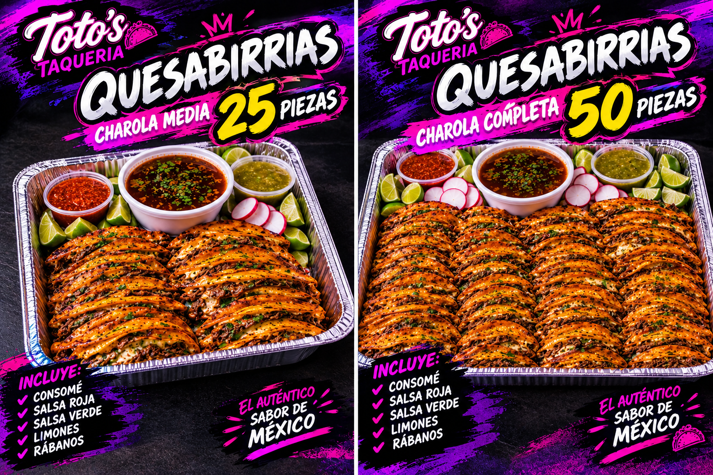

🔥 MEXICAN STREET FOOD 🔥
EL AUTÉNTICO
SABOR MEXICANO
Tacos, burritos, quesabirrias, mariscos y mucho más. ¡Ven a disfrutar!
📞 LLAMAR 🌮 VER MENÚ 📲 PEDIR POR WHATSAPP🌮 CORPORATE CATERING
Office Lunches • Meetings • Corporate Events
Comida mexicana para oficinas y eventos. Pedido mínimo: 10 personas.
🌮 Taco Bar
Fresh tacos with your choice of asada, chicken, al pastor or carnitas.
🌯 Burrito Catering
Freshly prepared burritos with your choice of protein.
🧀 Quesadilla Catering
Cheese quesadillas with your choice of protein.
🍟 Asada Fries
French fries topped with carne asada and delicious toppings.
🌮 Quesabirria Catering
Three crispy quesabirria tacos with consomé.
🥗 Chicken Salad
Fresh salad with chicken.
🥗 Asada Salad
Fresh salad with carne asada.
📦 ORDER CATERING
Minimum order: 10 people
Local delivery: $10
Prices are estimates for direct orders. Final quote subject to confirmation.
📲 REQUEST CATERING QUOTE🌮 TAQUIZAS PARA EVENTOS
Birthdays • Weddings • Graduations • Private Events
PAQUETE PARA 50 PERSONAS
$18 por persona
🔥 2 horas de servicio 🔥
🌮 INCLUYE
✔ Tacos con 3 carnes a elegir
✔ 3 salsas diferentes
✔ 1 agua fresca
✔ Cebolla y cilantro
✔ Rábanos y pepinos
✔ Cebolla asada y chiles asados
✔ 1 charola de 1/2 de arroz
✔ 1 charola de 1/2 de frijoles
✔ Platos, vasos, cucharas y servilletas
✔ 2 horas de servicio
🎉 PERFECTO PARA
Cumpleaños • Bodas • Graduaciones • Fiestas familiares • Eventos privados
📲 RESERVAR MI TAQUIZA🌮 PAQUETES DE QUESABIRRIAS
Perfectos para fiestas, reuniones y eventos familiares.

Charola mediana
25 quesabirrias
Charola grande
50 quesabirrias
¡AMBOS PAQUETES INCLUYEN!
✔ Consomé
✔ Salsa roja
✔ Salsa verde
✔ Limones
✔ Rábanos
📲 ORDENAR POR WHATSAPP¡VEN A VISITARNOS!
📍 1855 Tully Road, San José, California
📍 ABRIR GOOGLE MAPS📞 (669) 255-1225
LLAMAR AHORA📲 HAZ TU PEDIDO
Ordena fácilmente por WhatsApp.
📲 PEDIR POR WHATSAPP